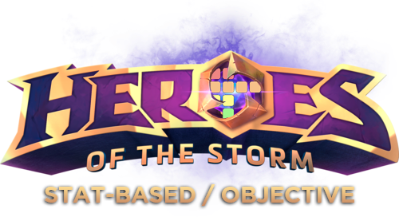

Please note: This tier list draws from years of accumulated data (since 2019), lifetime data fed directly from HeroesProfile and extensive analysis and research of individual players' behavior, and endeavors to maintain the utmost impartiality and objectivity possible. Core values of this list, pertaining to Skill, KDA, Kill Participation, Talent Evaluation and Player winrate are AI-generated and further builds are AI-assisted. This tierlist is NOT (and never claimed to be) arranging players by skill, but rather arranging them by "Which player is the best potential teammate?". For example, a player could be extremely talented and skilled (S tier), but if are also toxic and disruptive, perhaps even abusive(F tier), then these two positive and negative traits would average it out and end up in C tier (the average tier)
This tierlist provides an impartial and fact-based rundown to assist in recommending the best potential teammates for YOU, the community. If you disagree with this tierlist, then you simply disagree with your own publicly available record/stats and displayed behavior.
Hover over a Player name to see more information and Scroll to the bottom of the page to see how each stat works.
| S | ★ ★ ★ ❤ Gaflo |
★ ★ ★ ❤ athleticBird |
★ ★ ★ ❤ TheLegend27 |
★ ★ ★ ❤ Predton |
★ ★ Nano |
★ ★ Qopen |
★ ★ ★ Twice |
★ ★ KommanderRex |
★ ★ zero |
★ ★ Chelvin |
★ ★ BossGragas |
★ ★ Sven |
||||
| A | ★ ★ Tdmien |
★ ★ Tapajoey |
★ ★ ★ Tirigon |
★ ☢ MarlKarcs (aka Disciple) |
★ ★Serdath | ★ Hiraeth |
★ Deathknight |
★ ★ HunterOrc |
★ ★ Ruutek |
★ ★ Aestro |
★ ★ Sobb |
★ ★ LegendaryBBQ |
★ ★ WherIsMyTank |
★ ★ Alya |
★ ★ Nitram |
★ ★ Pudgenox |
| ★ ★ kupschi |
★ ★ Antonio0906 |
★ ★ EasyMVP |
★ ★ Guillaume |
★ ★ SomeoneNew |
★ ★Vladsand | ★ ★ ❤ Chris |
★ ★ Minimilk |
★ ★ Slick |
||||||||
| B | ★ EDGYDERE |
★ ★ FrozenZerg |
★ Xen |
★ ★ BOSSBANGER |
★ ★ harry3000 |
★ Novayne |
★ ★ BrbSoaking |
★ Ɣåłhåłłå |
★ ★ Saň |
★ Jared |
★ AngelGG |
★ Aumnescio |
★ ZWLO |
★ Revan |
★ haosnayt |
★ Crimson1298 |
| ★ ❤ JamesZ |
★ Raizan |
★Hrono | ★ Legaman |
★ Valnød |
★ BoJack |
★ HZRay |
★ Bambini |
☢ BillyTalent |
★ Makto |
★ mbee |
★ FrancoisH |
★ Мариша |
||||
| C | ★ ☢ Nidorya |
☢ Selendis |
★ DRama |
★ MŞ13 |
★ ModernAV |
★ kOry |
☢ Baldersson |
★ DioN |
★ Aramer |
★ ☢ ☢ TheViking |
fishNchips | ★Acnologia | KyleNavarr | ☢ Xaba |
★ BatteredMind |
★ ☢ ☢ JiangZM |
| ★ Asiroy |
★ ❤ Dainty |
★ Dom |
☢ ☢ VentedSun |
☢ ☢ phish |
★ AlexanderD |
★ hansen90 |
☢ ☢ LinK |
★ ☢ EnTaroAlarak |
★ Timpey |
Paulina35 | ★ Premore |
★ wszedzieNOBY |
☢ Monzoute |
☠ Rainred |
★ iNi3W1337 |
|
| ☢ Zuule |
☢ WMongrel |
☢ Labreris |
☠ Halaberiel |
☠ witchet |
purplepurple | BATEMAN | ★ Bashy |
Patata | ★ MILAN |
★ Sky |
☢ ☢ Gladius |
Modo | Crunchtime | |||
| D | ☢ SamDovl |
☢ ☢ Woodganyr |
☢ ☢ ☠ ImpactInter (aka BetterAszero) |
☢ ☢ MalyKutasiak |
☢ Stella (aka Lipstick) |
☢ ☢ Dyløs |
☢ ☢ TryHackx |
☢ ☠ Leyron |
☠ Jypyx |
☠ Squadra |
☢ ZuiFTW |
feral | ☠ Verrix |
☢ ☠ Elitesparkle |
☢ ☢ angela |
RIPERS |
| SDmitriy | ☢ Omega |
OblikoMorale | Cloudya | ☢☢☢☠ Skaian |
☠ Juggernaut |
☠ dani92esp |
☠ FrankieFix |
☢ OkUpA |
☢ ☢ SilentStorm |
☠ Keuschi |
☢☢☢☠ SKTT1MaRin |
☠ Extase |
☢ ☢ Master1k |
☠ AgressiveFly |
☠ HTOWER |
|
| ☢ ☢ AGROBOY |
☢☢⊘⊘⊘ Illidan999 |
☢ ☢ FesS |
☢ Smiglo |
☠ Esteruunus |
☠ Venomspit |
TYJP | ☠ Argorazor |
☢ ☢ Lombardo |
X0X0 | ☠ MO18 |
☠ chochichasti |
☠ Meat |
||||
| F | ☢ Lewandowski |
☢ ☠ Pierrnik |
☠ Askiro |
☠ NapoleonGG |
☠ Twister |
☢ ☢ Letgo |
☢ NoXoMo |
☢☢☠ Ironside |
☠ Kzyy |
☢☢☢☠ Cubrick |
☢☢☢ Ohkodon |
☠ Tomulus |
☠ siļeñÇě |
☠ Victoria |
☢☢☠ erfan |
☢ ☠ Sunwind |
F- | ☢☢☢☠ LuckyStrike |
☠ Jozefxdark |
☢☢☢☠ WickedCheese |
☢☢☢ Devilforce |
☢☢☢☠ HawaiooO |
☢☢☢ Erasmus |
☢☢⊘⊘⊘ LionFuture |
☢☢⊘⊘⊘ Lyriel |
☢☢☢ KleoN |
☢☢☢☠ Eowea |
☢☢☢☢ UtsuhoReiuji |
☢☢☢☢ Goat (aka Lost) |
☢☢☢☢☠ Rayze |
☢☢☢☢⊘⊘⊘ BPRaîku (aka MytiC) |
| ★★★ | Exemplary player, an indomitable force of good that inspires you to be a better person. marry me pls ღ |
|---|---|
| ★★ | Excellent player, no petty arguments, no drama, no ego—just pure enjoyable moments. |
| ★ | Having fun and good game experience together won't be a challenge. |
| ❤ | Considerate, friendly, positive person, who ensures teammates' comfort. |
| ☢ | Might exhibit mild toxicity and/or a lack of cooperation. |
| ☢ ☢ | Has displayed significant toxicity and/or delusional behavior. |
| ☢☢☢ | More toxic than uranium poisoning. Will make you doubt the future of the human species. |
| ☢☢☢☢ | Words haven't been invented yet. |
| ⊘⊘⊘ | Confirmed to abuse/cheat in order to secure an unfair advantage. |
| ☠ | Low KDA often stems from overextending and/or 'inting', resulting in more deaths than is reasonable. |
| S | Superb, Exemplary |
| A | Excellent |
| B | Good / Very Good |
| C | Average, Mid-Tier |
| D | Below Average, Suboptimal |
| F | Bottom of the Barrel |
| F- | Among the most toxic, abusive, deceitful and manipulative individuals you could encounter. |
| ⁿ/ₐ | Sample Size Too Small / Not Enough Data. |
| Signature Heroes | Directly fed from HeroesProfile data. If a player has more than 1 account on HeroesProfile (smurfs), they're averaged out between them. There is no past cutoff. |
| Skill | Directly fed from HeroesProfile's available data. Solo & Duo 100% Strength. Trio 50% Strength. Quad 20% Strength. 5-Stack 5% Strength. While the secret sauce (formula) for calculating Skill won't be revealed to prevent abuse, let's just say that neither winrate nor number of games matter. |
| KDA | Directly fed from HeroesProfile's available data. KDA on display is primarily for contrast to the Skill and it is not vital to the formula, there's a lot more going on. Players who primarily play sololaner will get automatic KDA boost (it's complicated, but short version would be HPScore difference between them and their teammates), because of the nature of their role, to equivalent with everyone else's. The ☠ icon is placed on individuals of D or F KDA. Solo & Duo 100% Strength. Trio 75% Strength. Quad 50% Strength. 5-Stack 25% Strength. Abathur Influence only 25% Strength (to prevent frequent Abathur players skyrocketing, essentially cheating the KDA). HPScore deviation from bigger to smaller stacks is punished. KDA requirement raises as Skill goes up (Generally a sign of skilled players trolling and playing like pepegas). |
| P/Kill | Average Kill Participation (aka how much you actually help your team secure kills). Passively tied to Skill, as P/Kill requirement goes up the higher the Skill rating. QM, Unranked and Ranked only. |
| SWR% | Solo Queue Win Rate Percentage. Duo Queue Win Rate is slightly used as a comparative/measuring stick. >60.89% is S-tier. Smurf accounts' early level abuse protection is in place. |
| TCE | Talent Choices Evaluation correlates closely with win rate, thereby favoring and punishing outliers at both ends of the spectrum. Penalizes players who experiment with unconventional builds, unless they keep a consistent positive track record as well as those who fail to consistently adhere to established strategies. Anchored to Skill & Winrate (cannot go further than 2 tiers). |
| Social & Behavior | User Input. Takes into account both the enjoyment and the quality of the games played, as well as the mutual respect, support, and group member growth. Additionally, it is considered how well the individuals treat their fellow party members and the overall positive atmosphere and experience that creates lasting, pleasant memories of the time spent together. Social equates to how available a player is - whether or not they are public, easy to reach, streaming, responsive to inquiries, can they often be found in voicechat with others, etc. |
| Different Gamemode Differentiation | Currently all stats from Ranked, QM, UD, ARAM are used together with equal strength. If such a need occurs in the future, they could be separated into several tierlists, one for each gamemode. Mirror matches excluded for ARAM only |
| Alt. IDs Disclamer | The Alternate IDs serve the sole purpose of indicating which accounts' statistics are considered for Skill/KDA calculation, rather than revealing smurfs. Identifying player smurfs is not the intention, and it's impossible to know every smurf account out there. |
| Various |
|